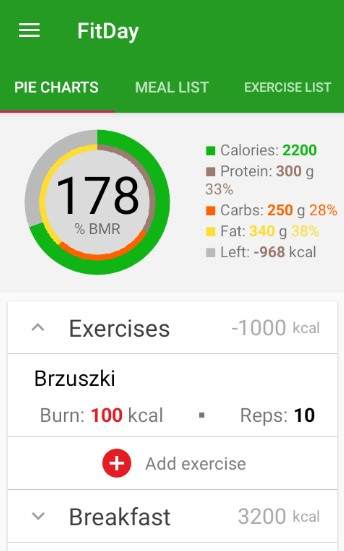
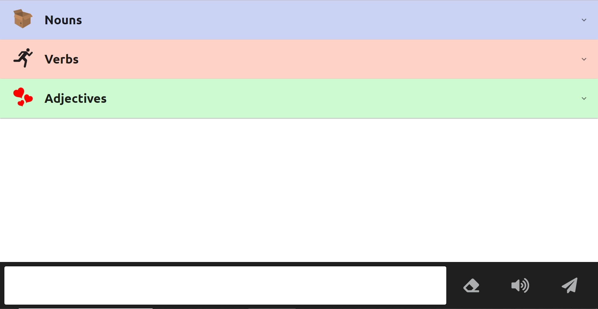
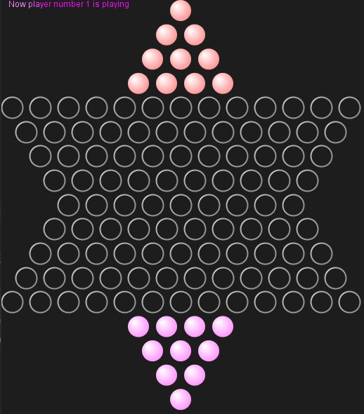

FitDay
Aplikacja mobilna w Kotlinie wspierająca odchudzanie
Aplikacja składa się z bazy posiłków i ćwiczeń i służy do monitorowania swojego dnia pod kątem spożywania i spalania kalorii. Projekt tworzony w grupie czteroosobowej. Aplikacja jest napisana na system Android w wersji od 26 w górę.
Elementy:- Aktywności i komunikacja między nimi
- Biblioteka do rysowania wykresów kołowych
- Baza danych Firebase
- Fragmenty
- Funkcje kalendarza
Aplikacja jest pomocna w organizacji diety i treningów, poprzez udostępnienie użytkownikowi kalkulatora kalorii a także możliwości śledzenia swojego spożycia i spalania w ciągu dnia. Daje też użytkownikowi dostęp do szerokiej bazy produktów żywieniowych i ćwiczeń, a także pozwala na dodawanie spersonalizowanych posiłków i ćwiczeń. Pozwala również, na układanie ćwiczeń w plany treningowe i na monitorowanie postępów w czasie. Aplikacja jest przeznaczona dla każdej osoby, która chce w bardziej świadomy i prostszy sposób zarządzać swoją dietą i treningiem. Skierowana jest przede wszystkim do osób w przedziale wiekowym 16 wzwyż.
I can talk
Projekt pozwala na komunikację osób autystycznych za pomocą obrazków konwertowanych na tekst
Projekt stworzony w 15 h godzin, stworzony i nagrodzony pierwszym miejscem na Hackathonie organizowanym na zakończenie kursu programowania webowego CodersCamp. Patronem wydarzenia była firma LiveChat, a główna nagroda wynosiła 10 000 zł.
Aplikacja webowa została napisana z użyciem frameworka React. Może być używana samodzielnie, ale docelowo została stworzona jako dodatek do produktu firmy LiveChat. Pozwala na korzystanie z czatu osobom, które mają problem z porozumiewaniem się za pomocą języka naturalnego - dlatego w I can talk komunikacja odbywa się za pomocą obrazków. Główną grupą docelową są osoby autystyczne i małe dzieci. Z obrazków można budować całe zdania, które następnie są wysyłane do odbiorcy już w postaci tekstowej. Zdanie, jak i pojedyncze słowa mogą zostać przeczytane przez lektora. Udało się także osiągnąć wysoką responsywność - dzięki zastosowaniu nowoczesnych technik takich jak Flexbox i Grid CSS, aplikacja może być z powodzeniem wykorzystywana na urządzeniach z małym ekranem. I can talk może stać się także świetnym narzędziem do nauki języka - działa zarówno na wzrok, jak i słuch, a przede wszystkim jest intuicyjna i prosta.
Chinese Checkers
Gra w chińskie warcaby wykonana w technologii klient-serwer
Rozgrywkę można prowadzić również z botem. Aplikacja posiada testy jednostkowe, a także wykorzystuje wzorce projektowe.
Użycie wzorca Interpreter:
public abstract class AbstractCirclesExpression {
protected VisualBoard visualBoard;
protected AbstractCirclesExpression(VisualBoard
visualBoard) {
this.visualBoard = visualBoard;
}
public abstract void interpreteQueries(String[] queries);
}
public enum CirclesExpressions {
MOV {
@Override
public AbstractCirclesExpression getCirclesExpression(
VisualBoard visualBoard) {
return new MovCirclesExpression(visualBoard);
}
},
ADD {
@Override
public AbstractCirclesExpression getCirclesExpression(
VisualBoard visualBoard) {
return new AddCirclesExpression(visualBoard);
}
}
}
public class VisualBoard {
...
public void interprete(String
query) {
if (query == null)
return;
String[] queries = query.split(" ");
CirclesExpressions circ = CirclesExpressions.valueOf(queries[0]);
if (circ != null) {
AbstractCirclesExpression expr = circ.getCirclesExpression(this);
expr.interpreteQueries(queries);
}
}
}
eMol
Aplikacja w Javie obsługująca sklep z książkami
W eMol możemy poczuć się jak klient firmy Amazon - po zalogowaniu możemy wybierać, kupować, a także publikować książki. Istnieje także możliwość wystawienia opinii poszczególnym książkom. Program jest przeznaczony również dla administratorów - mogą oni zmieniać stan magazynu po kupnie nowych książek. Aplikacja łączy się z bazą danych MySQL za pomocą JDBC.
MiniPaint
Prosty program graficzny w Javie
Pozwala rysować proste obiekty geometryczne, zmieniać ich kolory oraz wielkość. Wykonany został przy użyciu biblioteki Swing. Posiada dokumentację w Javadoc.